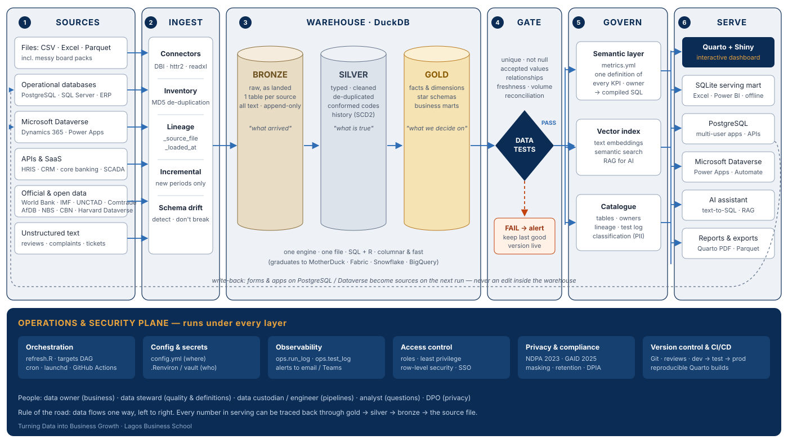

One architecture, built end to end on the course data. Files, spreadsheets, databases and official statistics flow into a DuckDB warehouse. Tests decide what gets published. A semantic layer keeps every KPI to one definition. Dashboards, marts and an AI assistant serve the result. The tutorial teaches every layer, and the dashboard shows it working.

The dashboard above is the static edition: it runs in your browser, so it can live on this password-protected site. The Shiny edition runs a live R session behind the page. It can switch between CSV, Excel, Parquet, SQLite, DuckDB and PostgreSQL, re-query the warehouse, draft SQL with AI, and refresh itself when the warehouse is rebuilt. It needs a server, so run it on your laptop or deploy it.
usethis::use_course("https://github.com/adibongo/tdbg2/archive/refs/heads/shiny-lab.zip")install.packages("usethis"). To clone with Git instead, so you can pull updates: git clone --branch shiny-lab --single-branch https://github.com/adibongo/tdbg2.git tdbg-shiny-lab, then open tdbg-shiny-lab.Rproj. Or download the ZIP and double-click the .Rproj file.)quarto::quarto_serve("02-dashboard.qmd"). The dashboard opens in your browser.01-build-data-layer.qmd. It takes about a minute.connect.posit.cloud with GitHub.adibongo/tdbg2, branch main, and the primary file platform/lab/02-dashboard.qmd. The manifest.json beside it lists every package.ANTHROPIC_API_KEY under Secrets to switch on the AI SQL assistant.A Connect Cloud app sits outside this site's password. The course data is synthetic, but if you would rather keep the live app private, choose a private deployment, or run it on a laptop in class.